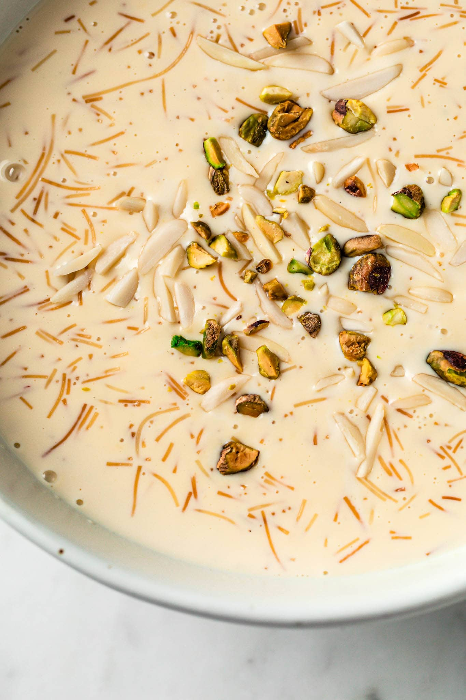

Sheer Khurma

The Perfect Pakistani Desert
This festive dessert is traditionally made with dates which are soaked in water overnight. Alternatively, you may
use normal dates as well.
Ingredients
- 1/4 cup ghee or butter
- 1/4 cup assorted nuts
- 1 litre full fat milk
- 1 cup nylon vermicelli
- 1/2 cup evaporated milk
- 2 green cardamoms crushed
- 1/2 cup sugar
Steps
- In a medium sized pot, heat half of the ghee. Add the nuts, and saute for 2 minutes. Remove from pot and set
aside.
- Add the remaining ghee, and the vermicelli. Roast on medium heat for 2-3 minutes, until golden and fragrant.
- Now add the milk with the cardamom pods.
- Cook on medium heat for 10-15 minutes while stirring.
- Add the sugar and cook another 5- 7 minutes. Finally add the evaporated milk and cook for an additional 5
minutes.
- Remove from heat and transfer to serving dish.
- Sheer Khurma can be eaten warm or cold. It will thicken upon cooling.